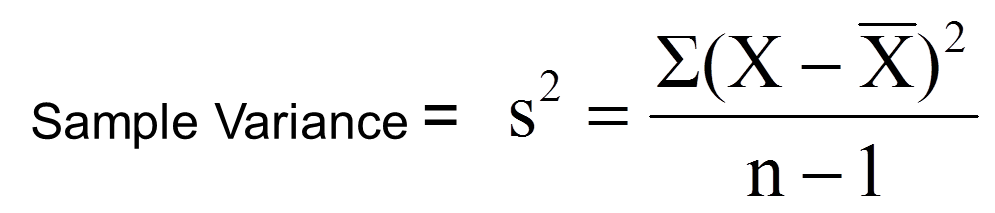
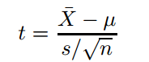
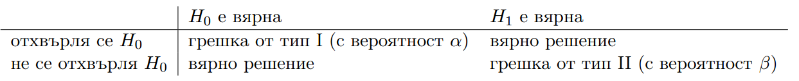

class: center, middle # Закон за големите числа LLN # Централна гранична теорема CLT (преговор) --- # Закон за големите числа # Law of Large Numbers Ако имаме разпределения X1,...Xn, които са независими и еднакворазпределени (т.е. с еднакво разпределение) (i.i.d) случайни величини със средно $\mu$ и стандартно отклонение $\sigma$, то разпределението $\overline{Xn} = \frac{1}{n} * \sum_{i=1}^n X_i$ Колкото повече расте n, толкова повече $\overline{X_n} -> \mu $ (т.е. се приближава до мю). Формално: или $\lim_{n \to \infty} P(|\overline{Xn} - \mu| < \alpha) = 1 $ --- # Централна гранична теорема # Central Limit Theorem Ако имаме разпределения X1,...Xn, които са независими и еднакворазпределени (т.е. с еднакво разпределение) (i.i.d) случайни величини със средно $\mu$ и стандартно отклонение $\sigma$, то разпределението $\overline{Xn} = \frac{1}{n} * \sum_{i=1}^n X_i$ е нормално разпределено $N(\mu, \frac {\sigma}{\sqrt{n}})$ $\overline{X} = \sum_{i=1}^n X_i$ е нормално разпределено $N(n\mu, \sigma\sqrt{n})$ От друга страна $\frac {\sigma}{\sqrt{n}}$ се нарича стандартна грешка. --- ### Силата на ЦГТ е, че важи за всякакво разпределение - извадките могат да идват от всякакво разпределение (не задължително нормално) и в крайна сметка разпределението на извадковото средно е нормално със редно $\mu$ и стандартно отклонение $\frac {\sigma}{\sqrt{n}}$. --- # Какво правеше qqnorm, qqline? --- # Confidence interval estimations # Доверителни интервали --- ## Confidence interval estimations Да изведем интервала за $\mu$. Имаме предвид, че n е голямо и значи можем да използваме ЦГТ. --- $\mu < \overline{Xn} + Z_{\alpha/2}\frac{\sigma}{\sqrt{n}} $ $\mu > \overline{Xn} - Z_{\alpha/2}\frac{\sigma}{\sqrt{n}} $ --- Имаме няколко случая: * Ако n е голямо, n > 30, и знаем $\sigma$, заместваме във формулата, която получихме. (всичко точно) * Ако n е голямо, n > 30, и не знаем $\sigma$, $\sigma$ може да заместим с s, където:  * Ако n < 30, знаем $\sigma$ и $X_i \sim N(\mu, \sigma) $ (т.е. използваме го само, ако идваме от нормално разпределение) * Ако n < 30, и не знаем $\sigma$, но знаем, че $X_i \sim N(\mu, \sigma) $, използваме, че $\overline{Xn} \sim T(n-1)$. * Ако n < 30, не знаем $\sigma$, не можем да допуснем, че са нормално разпределени, тогава правим тест за медиана, а не за средно. --- Да изведем интервала за $\mu$, когато: * Ако n < 30, и не знаем $\sigma$, но знаем, че $X_i \sim N(\mu, \sigma) $, използваме, че $\frac{\overline{Xn} - \mu} {s} \sqrt{n} \sim T(n-1)$. --- R разполага със следните инструменти, които правят тестове и показват доверителни интервали: prop.test, t.test и wilcox.test Ще си говорим за следните: * тестове за пропорции * тестове за средно * тестове за медиана --- ## Тестове за пропорции пример: По тв – интервюирали са 100 души, 20 са казали да → 20% от популацията са казали да. Това не е вярно, тъй като не можем да заключим от извадката такова нещо – трябва да интервюираме цялата популация (а това е невъзможно). ```r prop.test(20,100) prop.test(20,100,conf.level=0.90) ``` --- ```r prop.test(x, n, p = NULL, alternative = c("two.sided", "less", "greater"), conf.level = 0.95, correct = TRUE) ``` --- # Тестове за медиана --- # Нали помнихте, че имахме следните случаи --- * Ако n е голямо, n > 30, и знаем $\sigma$, заместваме във формулата, която получихме. (всичко точно) <p style="color: red;">z.test</p> * Ако n е голямо, n > 30, и не знаем $\sigma$, $\sigma$ може да заместим с s, където: <p style="color: red;">z.test</p> * Ако n < 30, знаем $\sigma$ и $X_i \sim N(\mu, \sigma) $ (т.е. използваме го само, ако идваме от нормално разпределение) <p style="color: red;">z.test</p> * Ако n < 30, и не знаем $\sigma$, но знаем, че $X_i \sim N(\mu, \sigma) $, използваме, че $\overline{Xn} \sim T(n-1)$. <p style="color: blue;">t.test</p> * Ако n < 30, не знаем $\sigma$, не можем да допуснем, че са нормално разпределени, тогава правим тест за медиана, а не за средно. --- ## Тоест: * голямо n → <span style="color: red;">z.test</span> * ако знаем сигма го ползваме * ако не знаем сигма, ползваме s * n <= 30, но знаем стандартното отклонение и знаем, че наблюденията ни идват от нормално разпределение. → <span style="color: red;">z.test</span> * n <= 30, но не знаем стандартното отклонение и знаем, че наблюденията ни идват от нормално разпределение. → <span style="color: blue;">t.test</span> --- В UsingR библиотеката имаме функцията simple.z.test(x, sigma, conf.level=0.95) Или сами можем да си дефинираме такава функция: ```r simple.z.test = function(x,sigma,conf.level=0.95) { n = length(x); xbar = mean(x); alpha = 1 - conf.level; zstar = qnorm(1-alpha/2); SE = sigma/sqrt(n); xbar + c(-zstar*SE,zstar*SE); } simple.z.test(x,1.5) ``` --- ## T-test Казахме, че ще го използваме, ако: * n <= 30, но не знаем стандартното отклонение и знаем, че наблюденията ни идват от нормално разпределение.  ~ T(n - 1) ```r t.test(x) t.test(x, y = NULL, alternative = c("two.sided", "less", "greater"), mu = 0, paired = FALSE, var.equal = FALSE, conf.level = 0.95, ...) ``` --- Пример: Да речем, че теглото на човек е нормално разпределено. Човек се мери всеки ден и е получил следното: 175 176 173 175 174 173 173 176 173 179 при $\sigma = 1.5$ намерете 90% доверителен интервал за теглото на този човек. --- Това бяха confidence intervals за средно. Съществуват и такива за медиана. Помните ли кога ги ползвахме? wilcox.test(x,conf.int=TRUE) --- # Тестване на хипотези --- ## Тестване на хипотези Тестването на хипотези много прилича на намирането на доверителни интервали. * Доверителните интервали ни казват в кой интервал лежи даден параметър. * При хипотезите предполагаме, че параметърът заема някаква стойност и после пресмятаме каква е вероятността да сме сгрешили, приемайки хипотезата. Обикновено (това, което правим в задачи) доказваме противното. * Примерно: хипотезата ни е, че $\mu = 1$, пресмятаме вероятностите и отхвърляме хипотезата. --- ## Та какво са хипотези? Хипотезите са предположения. * $H_0$ е нулева хипотеза * $H_a$ е <strong>множество</strong> от алтернативни хипотези <strong style="color: red;">ВАЖНО!</strong> Тестването казва дали отхвърляме, или не хипотеза. <strong>НЕ</strong> казва дали хипотезата е вярна, а само дали я отхвърляме, или не. --- # Хипотези <div style="height: 40%; padding-top: 10%;"> </div> * $\alpha$ - грешка от тип I - вероятност хипотезата да е вярна и да я отхвърлим (ДА-ДА :D) * $\beta$ - грешка от тип II - вероятност хипотезата да не е вярна и да не я отхвърлим (НЕ-НЕ) * $\alpha$ е ниво на съгласие * $1 - \beta$ е мощност на критерия --- ## В началото на всеки тест фиксираме $\alpha$, нивото на съгласие --- ## Двустранен тест $H_0: \mu = m $ $H_a: \mu \neq m $ ## Едностранен тест $H_0: \mu <= m $ $H_a: \mu > m $ или $H_0: \mu >= m $ $H_a: \mu < m $ --- # Кога отхвърляме хипотеза? ## Какво е К.О? Това е областта с лице $\alpha$, която противоречи на хипотезата ни. К.О. при двустранен тест. К.О. при едностранен тест. В зависимост от това какво разпределение ползваме! N, T, ChiSq ## Отхвърляме хипотезата, когато тестовата статистика попадне в К.О. --- ## Равното винаги е в нулевата хипотеза Ако имате в задача, че предполагаме, че mu = 0.2, то хипотезата е ясна: $H_0: \mu = 0.2 $ $H_a: \mu \neq 0.2 $ Ако в задачата предполагаме, че mu > 0.2, то хипотезата ще е $H_0: \mu <= 0.2 $ $H_a: \mu > 0.2 $ --- Пример: Компютърна система се състои от 10 компютъра и един принтер, като средното време за стартиране на системата е 15 минути. Добавени са още 10 компютъра и един принтер и трябва да се провери дали средното време се е променило. Направени са 30 измервания, $n=30$, и от тях се получават: $\overline{Xn} = 14.0, s = 3$ Ако приемем, че това време идва от нормално разпределение: * Намерете 90% доверителен интервал за $\mu$. * Съставете хипотеза за $\mu$ и я тествайте. --- $H_0: \mu = 15 $ $H_a: \mu \neq 15 $ Тъй като n = 30, ще ползваме T разпределението. Нямаме данни за измерванията, а само за извадковото средно и извадковото стандартно отклонение. Затова не може да използваме t.test, а ще ползваме интервала, който получихме по-горе ```r 14 + qt(0.05, 29)*3/sqrt(30) # [1] 13.05344 14 + qt(0.05, 29, lower.tail = FALSE)*3/sqrt(30) # [1] 14.94656 ``` --- За да тестваме хипотезата, смятаме тест статистика и гледаме тя дали е в К.О. $ t = \frac {\overline{Xn} - \mu_0} {\sigma} \sqrt n $ В $\mu_0$ заместваме с нашата хипотеза t = -1.83 ```r t = (14 - 15)/3*sqrt(30) [1] -1.825742 ``` К.О. при нас е: ```r qt(0.05, 29) qt(0.05, 29, lower.tail = FALSE) ``` $(–\infty, -1.699127) и (1.699127, \infty)$ Попада вътре -> отхвърляме я! --- #p value Вероятността да наблюдаваме нашите данни и такива, които подкрепят още по-силно алтернативната хипотеза. Изчислява се и се сравнява с $\alpha$ и ако $p < \alpha$ отхвърляме хипотезата. Тестовете в R смятат точно p_value. --- # Да обобщим За да тестваме хипотеза имаме два варианта: 1. смятаме К.О. и тестовата статистика * ако тя попада в К.О., то отхвърляме хипотезата. 2. смятаме p_value и сравняваме с $\alpha$ * ако е по-малко от $\alpha$, отхвърляме хипотезата. --- Пример: 42 от 100 души казват "да". Хипотезата ни е, че половината популация са съгласни. ```r prop.test(42, 100, p = 0.5) ``` prop.test(x, n, p = NULL, alternative = c("two.sided", "less", "greater"), conf.level = 0.95, correct = TRUE) --- ## Пробвайте сега ```r prop.test(420,1000,p=.5) ``` ## Как тълкувате този резултат? ---